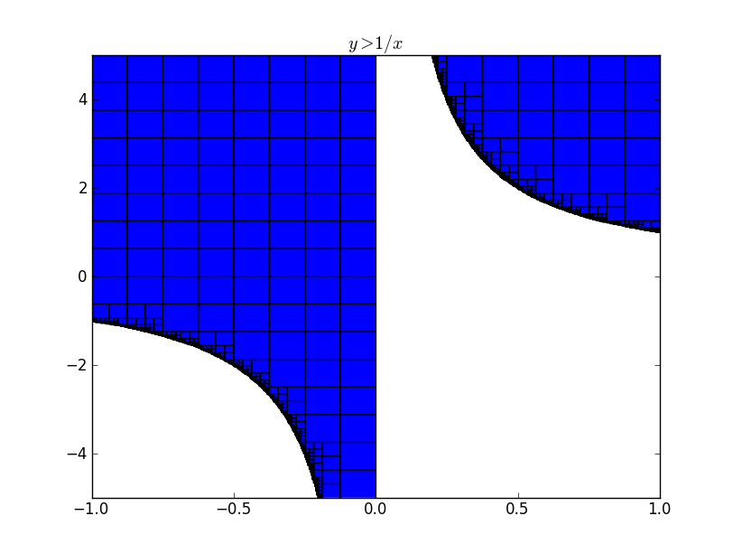
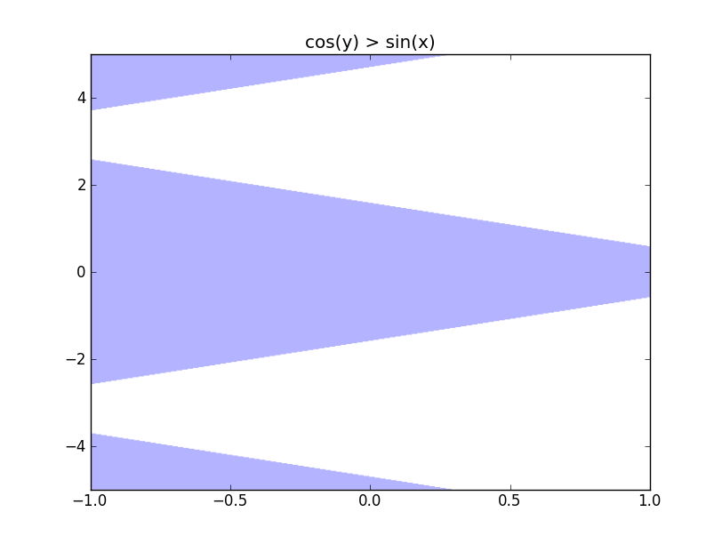
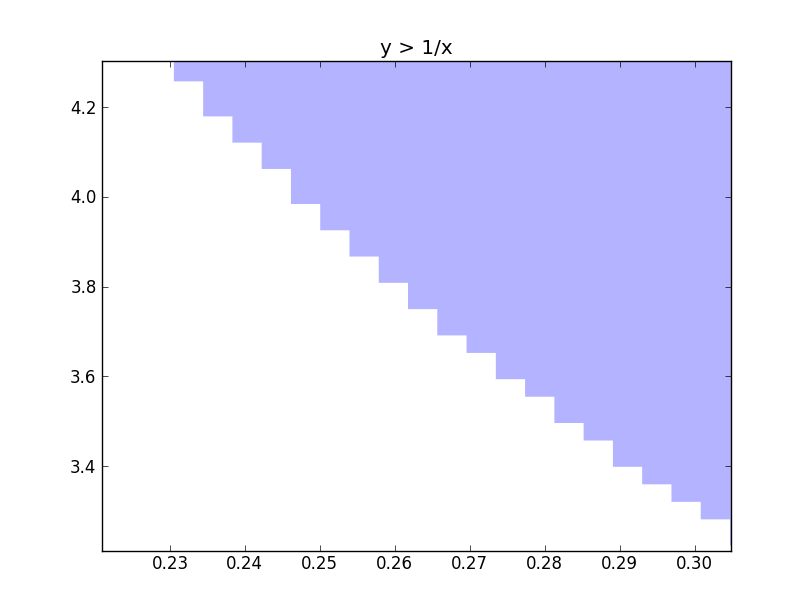

My GSoC project is to provide support for implicit plotting using interval arithmetic. As mpmath already has a very good interval arithmetic library, I wanted to try out how efficient the algorithm is going to be using the mpmath interval arithmetic library. I wanted to get an idea on the time required for plotting and also wanted to decide whether to write my own interval arithmetic library or use the existing mpmath library and add additional things to it.
I have a basic implementation which supports only the mpmath interval arithmetic functions. The results look promising and I am guessing a separate implementation for plotting will be faster and I will be able to add features more easily.I have an image of

It took 1.57 seconds to render this image which is decently fast. I observed that if the independent regions are less and large, then the time take for the plot to be rendered is high. I tried

I wanted to try what the maximum time it takes to render something. So I tried plotting
Another problem that I have to address is rasterization. I am really not getting any ideas on how to avoid rasterization. One way is to handle the zoom event in matplotlib and change the data to match the zoom. But for complicated graphs, revaluating might take a lot of time, which is bad.

We can see that if there is a way of interpolating over the rectangular edges, then we will have a plot without rasterization. I haven't got any foolproof idea to implement this interpolation as there will be many independent regions. So if you have any idea, then please comment or mail me :). The code for plotting can be found here.
Comments !